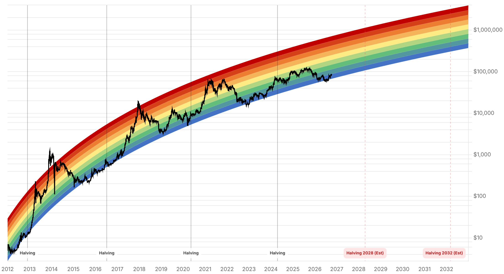

Reporte financiero
BTC cotiza en USD 83.058,27 en vivo (07:29 UTC), un -0,26% frente al cierre de ayer (USD 83.275,52), estabilizándose tras la caída relámpago del 7 de octubre reportada ayer. La novedad del día es la publicación de las minutas de la Fed (reunión del 15-16 de septiembre), que salieron ayer a las 14:00 ET como estaba previsto: confirman un voto unánime 12-0 por una subida de 25 puntos base a 3,75%-4,00% -la primera del ciclo desde 2023-, con la mayoría de los participantes señalando que otra alza en 2026 'sería probablemente apropiada' y varios calificando la tasa actual como no restrictiva o solo levemente restrictiva. Pese al tono hawkish, la reacción de Bitcoin al texto en sí fue tenue: cotizaba en USD 83.050 justo antes de las 14:00 ET y subió a USD 83.306 en los primeros cinco minutos (+0,18%) -el movimiento más marcado entre S&P 500, oro y BTC en ese instante-, pero sin revertir la tendencia bajista que ya venía del golpe por la tensión en Ormuz del día anterior. Dentro de la Fed hay una división visible: John Williams (Fed de Nueva York) y Lorie Logan (Fed de Dallas) se inclinan hawkish -Logan cree que podrían necesitarse al menos dos alzas más-, mientras Michelle Bowman (gobernadora) no ve urgencia de actuar; J.P. Morgan anticipa una subida más en diciembre. Las probabilidades de mercado para una subida en la reunión del 27-28 de octubre cayeron a ~20%, desde ~55% hace una semana. El Fear & Greed Index retrocedió por segundo día consecutivo, de 71 a 64 -sigue en 'Greed' pero ya se acerca a la zona neutral-. No se encontró dato verificable de flujos de ETF para el 7 de octubre (el último confirmado sigue siendo la entrada neta de USD 118,86M del 6 de octubre ya reportada ayer) ni novedades en el frente regulatorio de Tether -el plazo del Senado al Tesoro/DOJ sigue pendiente para el 9 de octubre-. El próximo catalizador mayor es el IPC de septiembre, el 14 de octubre.
El FOMC votó 12-0 a favor de subir su tasa de referencia en 25 puntos base a 3,75%-4,00% en la reunión del 15-16 de septiembre, confirmado en las minutas publicadas ayer 7 de octubre a las 14:00 ET. La mayoría de los participantes consideró que otra subida en 2026 'sería probablemente apropiada', y algunos señalaron que los riesgos de inflación se habían inclinado aún más hacia sorpresas al alza. Varios funcionarios calificaron la tasa actual como no restrictiva o solo levemente restrictiva, y varios participantes comentaron que la escala de la construcción de infraestructura de IA (centros de datos y chips) seguía sorprendiéndolos. Las minutas son anteriores al reporte de empleo de septiembre (apenas ~29.000 empleos nuevos frente a ~90.000 esperados, desempleo en 4,2%), que se conoció después de la reunión.
Bitcoin cotizaba en torno a USD 83.600 hacia las 12:30 ET de ayer, cayó a ~USD 83.050 justo antes de la publicación de las 14:00 ET, y subió a USD 83.306 en los primeros cinco minutos tras conocerse el texto (+0,18% en Binance) -el movimiento más pronunciado entre S&P 500, oro y BTC en ese momento, aunque acotado-. El repunte no revirtió la tendencia bajista que venía de la cascada de liquidaciones por la tensión en el Estrecho de Ormuz reportada ayer; el precio en vivo de esta edición (USD 83.058,27) queda prácticamente en el mismo nivel que el cierre de ayer, sugiriendo una fase de consolidación más que una reacción direccional clara a las minutas en sí.
John Williams (presidente de la Fed de Nueva York) calificó como razonable una subida adicional este año, y Lorie Logan (presidenta de la Fed de Dallas) planteó que podrían necesitarse al menos dos alzas más. En contraste, Michelle Bowman (gobernadora de la Fed) no ve urgencia de actuar. J.P. Morgan, por su parte, anticipa una subida adicional en diciembre. Las probabilidades de mercado para una subida en la reunión del 27-28 de octubre cayeron a ~20%, desde ~55% hace una semana -consistente con la cifra de ~20,5% reportada por fuentes de mercado para el día de ayer-.
El índice bajó de 71 (reportado ayer) a 64 hoy, acumulando una caída de 9 puntos en dos días. Sigue en zona de 'Greed', pero ya se acerca al límite con 'Neutral' (habitualmente bajo 55), reflejando el enfriamiento de sentimiento tras dos jornadas de caída de precio y el tono hawkish de las minutas.
No se encontró una cifra de flujo de ETFs de BTC confirmada específicamente para el 7 de octubre en fuentes consultadas hoy -el último dato verificado sigue siendo la entrada neta de USD 118,86M del 6 de octubre, ya reportada ayer-; se evita inventar una cifra para completar el dato diario. Tampoco hay desarrollo nuevo confirmado en el frente regulatorio de Tether: el plazo que el Senado dio al Tesoro y al DOJ para responder sobre el informe de minoría sigue pendiente para el 9 de octubre, sin respuesta registrada todavía.
| Periodo | Valor |
|---|---|
| 2 oct | 84497.21 |
| 3 oct | 84763.58 |
| 4 oct | 86480.3 |
| 5 oct | 85786.59 |
| 6 oct | 85557.56 |
| 7 oct | 83275.93 |
| 8 oct (en vivo) | 83058.27 |
| Periodo | Valor |
|---|---|
| Fear & Greed | 64 |

“The Fed repricing has already provided a meaningful boost to Bitcoin.”
Con el precio consolidando en torno a USD 83.000-83.300 tras la reacción tenue a las minutas de la Fed, el nivel inmediato a vigilar sigue siendo el soporte de USD 82.500-83.300 señalado por varios analistas antes de la publicación; una pérdida de esa zona reabriría el camino hacia el soporte de USD 80.000 mencionado en coberturas recientes, mientras que una recuperación sobre USD 85.000 revalidaría el rango previo a la caída del 7 de octubre. El catalizador más próximo es el IPC de septiembre, el 14 de octubre.
La división dentro de la Fed (Williams y Logan hawkish, Bowman sin urgencia de actuar, J.P. Morgan viendo una alza más en diciembre) deja el camino de tasas como el principal driver de mediano plazo, con el mercado pricing ~20% de probabilidad de una subida el 27-28 de octubre. La reversión de los flujos de ETF hacia positivo el 6 de octubre no tiene continuidad confirmada todavía -sin dato verificable para el 7 de octubre-, por lo que sigue siendo pronto para tratarla como tendencia.
Sin cambios en los objetivos de precio de largo plazo ya reportados en ediciones anteriores (Citigroup USD 113.000, Bernstein, Standard Chartered, Tom Lee, NYDIG, Armstrong) ni en el trasfondo regulatorio (demanda de la ICBA contra la OCC, sanciones a la red A7, investigación sobre Tether) -no se encontró desarrollo nuevo y verificable en ese frente hoy, más allá del plazo de respuesta sobre Tether que vence el 9 de octubre.
El precio se mantiene apenas por encima de esta zona de soporte señalada por varios analistas antes de la publicación de las minutas. Una pérdida sostenida abriría paso hacia niveles más bajos; una recuperación sobre USD 85.000 revalidaría en cambio el rango previo a la caída del 7 de octubre.
Con las probabilidades de una subida en octubre ya en ~20% y la Fed dividida internamente, un dato de inflación más caliente de lo esperado podría revertir esa probabilidad al alza y presionar a los activos de riesgo, incluyendo Bitcoin.
El movimiento tras la publicación de las minutas fue acotado y no revirtió la caída previa por la tensión en Ormuz. Conviene esperar más sesiones antes de leer la estabilización actual como un cambio de tendencia.